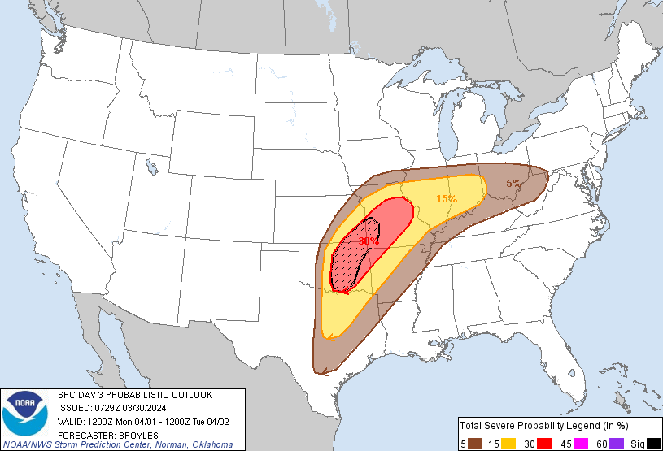
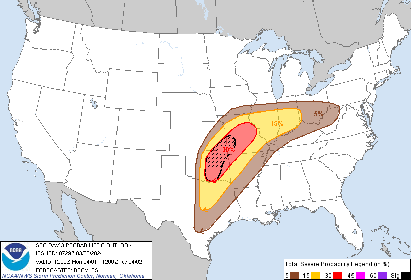
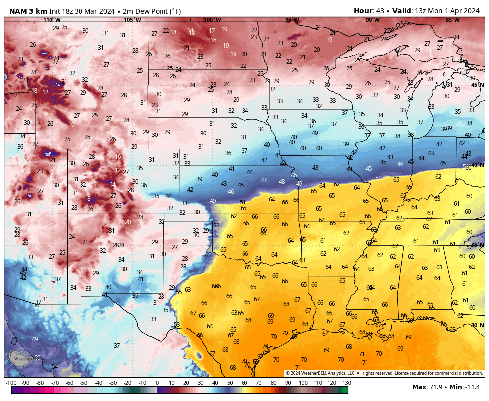
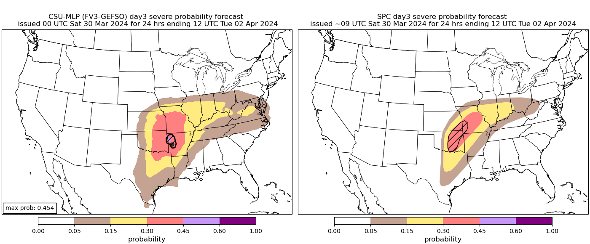
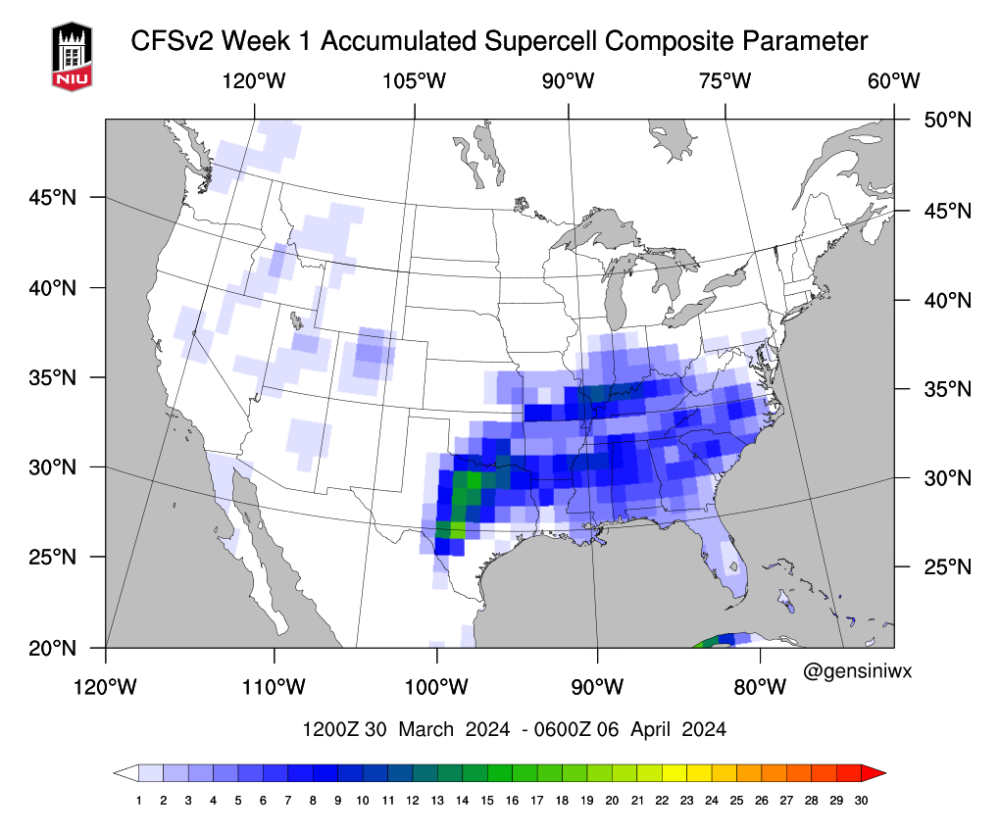
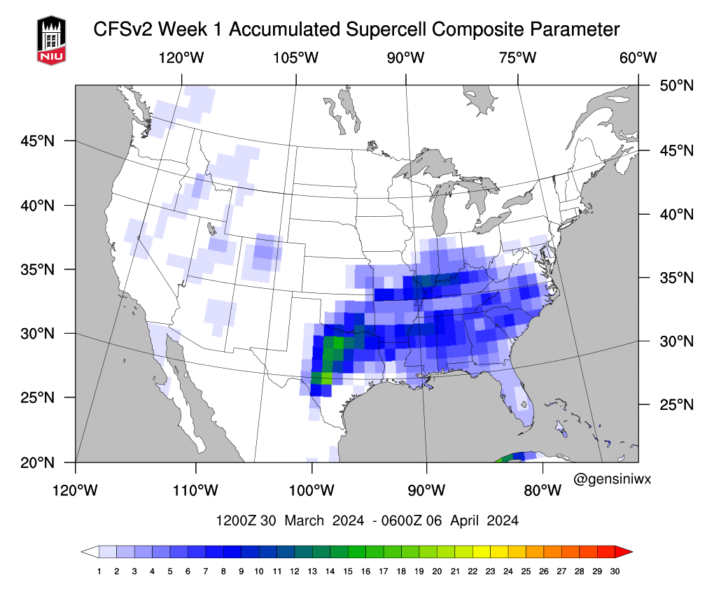
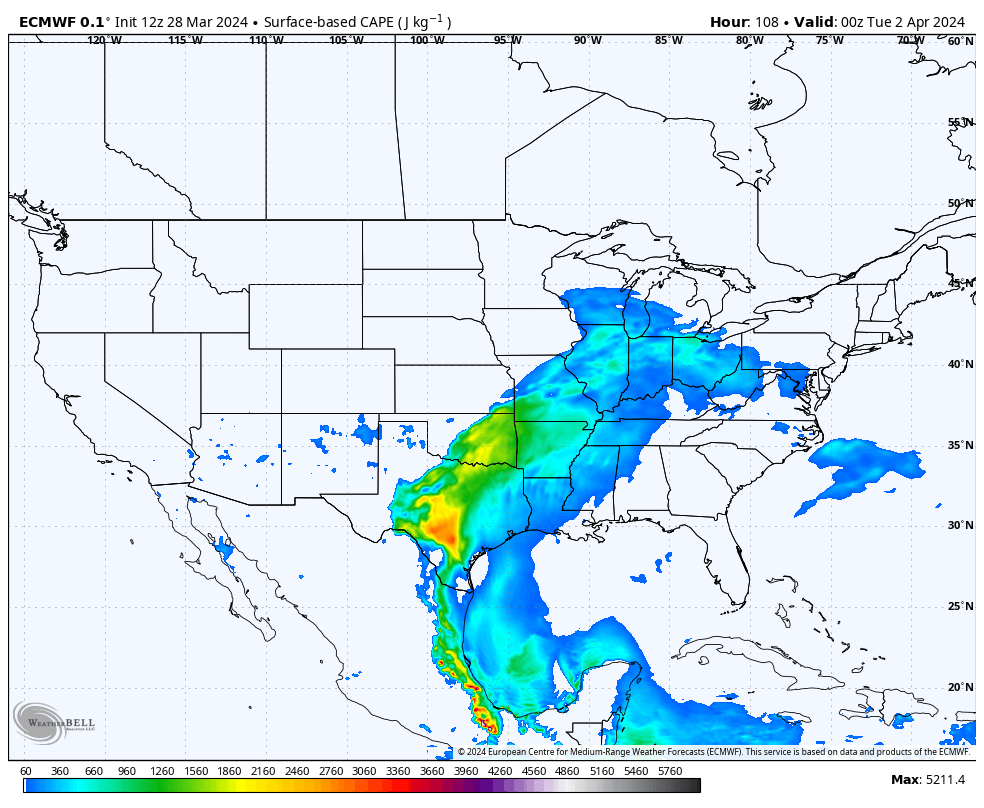
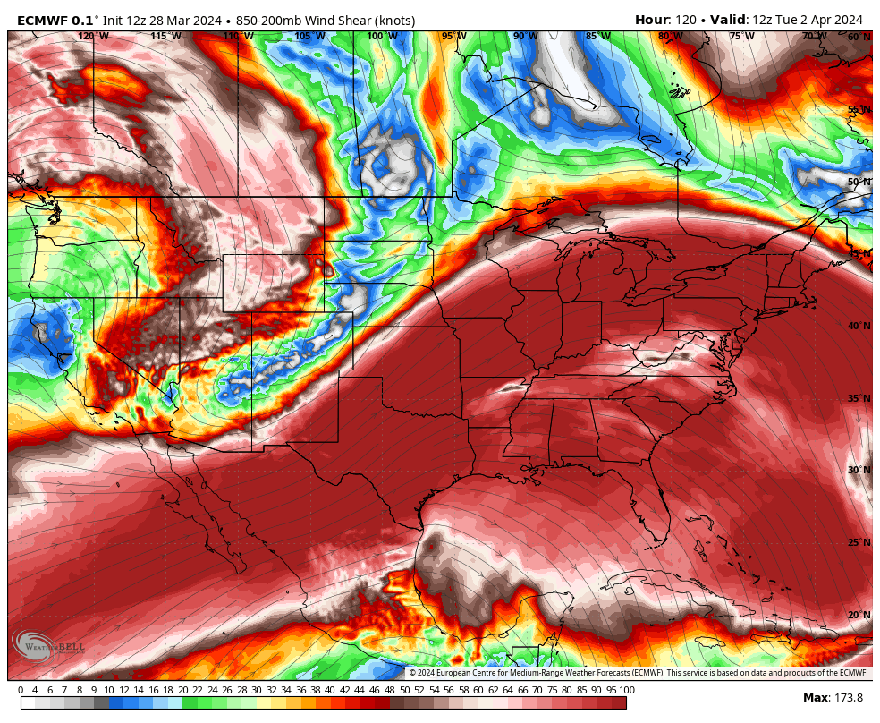
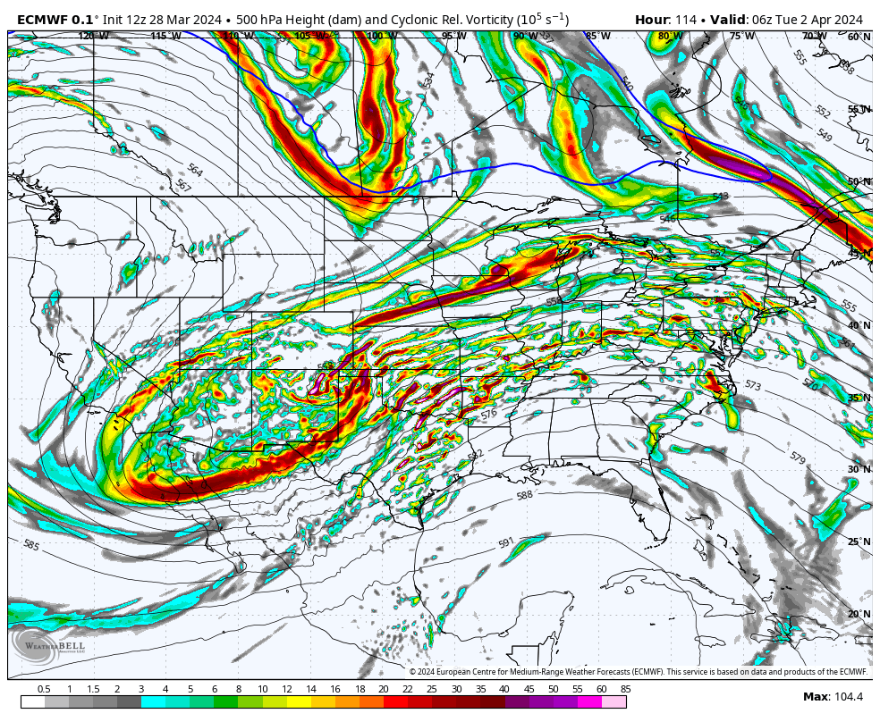
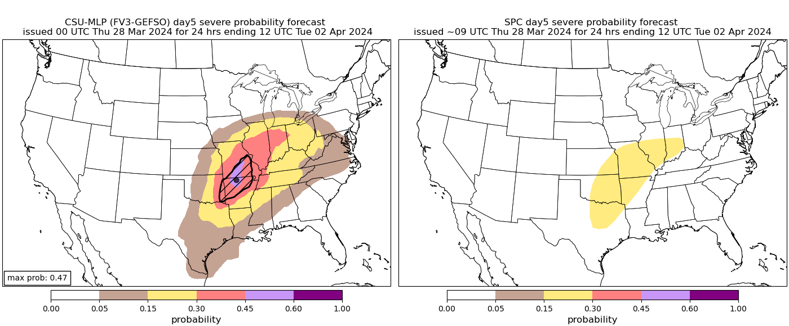

Possible Severe Weather Outbreak
So as we see that an upper level jet stream will cross over INCOF central Oklahoma and Missouri we will see high levels of upper wind pushing a forceful amount of air causing a cold/warm air boundary forcing warm air up causing low pressure along with the instability in the atmosphere.

So will see high levels of shear around 21z April 1st from Oklahoma into Missouri with parts being around 100 M/s2, so in incredible rotational force moving the atmosphere and possible supercell structures. though lower amounts of helicity is modeled, models are subject to change, but most likely we will see lower helicity in the updraft in storm structures

High levels of CAPE is good for storm development, Updraft helicity tracks show very little updraft and the little we have is very isolated and powerful in southern Oklahoma and lesser but more in Missouri though there is a lot of instability in the atmosphere, as we see in sounding models very high levels of CAPE and low levels of CINH witch could lead to very large and strong tornados, which is not out of the question, which SPC has issued today a 30% hatched probably of severe weather, which w could see a Moderate risk issued by SPC.

.png)
 

Upper level Lapse rates show lower march 31st going into mid day and into April 1st show incredibly high LR around 7-10 C which Significantly helps with instability, which the MU parcel lifts above Temp bring high amounts of CAPE which we talked about and falls below the Temp lower in the atmosphere causing LL downdraft/CINH
Along with Instability high levels of vorticity will cause Cyclonic rotation in the atmosphere on main development layers, so we got many layers of rotation on the X,Y and Z arsis of the atmosphere.

A small dry line will also cross along the top of Texas most likely not be doing anything, the most predicted to happen is a a possible thunderstorm line and rain.
Along with this Model data, CSU-MPL show a max ATTM a .454 hatched for severe weather and a .30-.45 chance of severe weather all though out Missouri and parts of Oklahoma Arkansas and Kansas, CIPS show a high chance around Missouri the 31st and a very high chance around Kansas and Oklahoma April 1st, and finally NIU CFSv2 a significant parameter around the boarder of Texas and Oklahoma.
 

so areas around Oklahoma Missouri Kansas Arkansas could see the worst severe weather and parts of Texas could see severe thunderstorms with the chance of tornados being lower due shear and Jet, SPC will most likely issue a moderate risk for severe weather for the 31st and or 1st of April.
These models will change so except another one until the event has stared and ill try my best to stream that day , Ill be live on X/Twitter.com on my profile
alrighty folks so starting march 31st there will be an upper level jet stream through going over Texas/Oklahoma casueing severe weather though the 31st to april 3rd, with hail, flooding, and most prominite tornados


So looking at ECMWF we are seeing higher levels of CAPE And CINH, shear and vorstity, so a severe weather outbrake is expected and most likely,
  So now looking at weather Guidence models here we can see there is a strong focus around oklahoma and missouri where we could see the worst weather

So with all these models and a collection of forigen models, and local models here is were i think the worst weather will happen